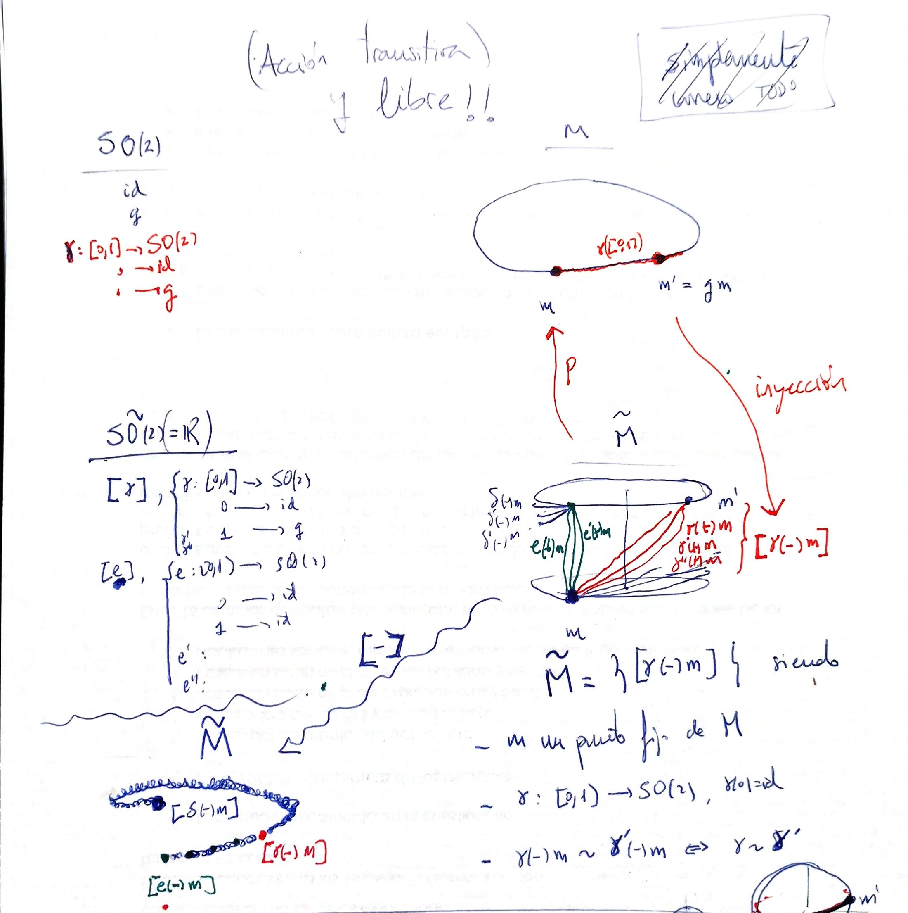

Covering groups
Given a Lie group $G$ with Lie algebra $\mathfrak{g}$ we can construct a new group $\tilde{G}$ with the same Lie algebra in the following way: first, one forms the path group comprised of paths in $G$ emanating from $\mathrm{id}$ (not ending anywhere in particular), then identifies paths which are equivalent by an endpoint-preserving homotopy and obtain
$$ \tilde{G}=\{[\gamma]: [0,1]\stackrel{\gamma}{\mapsto} G, \gamma(0)=id\} $$One may multiply these paths pointwise, which is well-defined on homotopy classes again, and obtain a group.
There is an obvious homomorphism
$$ p:\tilde{G}\to G $$which just forgets the path and keeps its endpoint.
We can topologize $\tilde{G}$ correctly, simply taking sufficiently small connected neighbourhoods in $G$ and lift them to connected neighbourhoods in $\tilde{G}$.
This group is called the universal covering group of $G$. It turns out that the kernel of $p$ is a discrete subgroup $K$ of $Z(\tilde{G})$, the center of the group (see result in Lie group). In fact, for every discrete subgroup $K'$ of $Z(\tilde{G})$, $\tilde{G}$ is the universal covering of
$$ \tilde{G}/K' $$That is, the set of all the groups with the same universal covering group forms a lattice, in correspondence with the lattices of discrete subgroups of $Z(\tilde{G})$. The maximal element is the proper $\tilde{G}=\tilde{G}/\{e\}$ and the minimal element is $\tilde{G}/Z(\tilde{G})$.
Also, we have that the first homotopy group let us recover the subgroup of $Z(\tilde{G})$:
$$ \pi_{1}(\tilde{G} / K, e) \cong K $$Important examples are:
- $(\mathbb{R},+)$ is the universal covering group of $SO(2)=SU(1)$. The covering map is
with
$$ exp(t)=\begin{pmatrix} cos(t) &-sin(t) \\ sin(t) & cos(t) \end{pmatrix} \in SO(2) $$or $exp(t)=e^{it}\in SU(1)$.
It can be shown that $\pi_1(SO(2),id)=\mathbb{Z}$.
- The universal covering group for $SO(3)$ is $SU(2)$. The plate trick shows that it is a double cover ($\pi_1(SO(3),id)=\mathbb{Z}_2$). We can watch it if we think in topological terms. Represent $SO(3)$ like a half sphere (filled). We have axis of rotation (direction of the arrow) and angle of rotation (length of the arrow up to $2\pi$). The half shell and the center point are identified (the identity element).

On the left, the green path represents a full rotation. It cannot be deformed to the identity. But on the right, the red path represents twice a full rotation. We can move the bottom point to the upper one, along the shell, and then contract to the identity at the center of the sphere.
The universal covering for $SO(3)$ , say $\tilde{SO(3)}$, can also be pictured as $S^3$, that is, a filled sphere with the whole shell identified with one point.

- In general, the universal covering group for $SO(n)$, for $n>2$, is denoted by $Sp(n)$ and is a double covering.
- More interesting examples at Wikipedia (universal covering group).
On the other hand, when we want to visualize a group (see visualization of Lie groups), I unconsciously think of a manifold invariant over the group action, say $M$,
$$ G \times M \mapsto M $$and keep track of how a single point change by the group action (piece of the orbit). With even more imagination we can imagine the simultaneous orbits of all the points $m \in M$. Keep an eye: the action must be transitive and free.

But what about the universal covering group? If we imagine the action of $\tilde{G}$ over $M$, we have nothing new respect to $G$, so to visualize $\tilde{G}$ we must consider the action of $\tilde{G}$ over a broader manifold $\tilde{M}$.
My idea is something like:
- Assume that the action of $G$ over $M$ is transitive and free: given $m\in M$, for every other $m'\in M$ we have $g\in G$ such that $m'=gm$.
- Give a piece of bread to a point $m\in M$ and apply to it all the paths in $\tilde{G}$ before taking classes (denote it $\bigsqcup \tilde{G}$).
- In the movement of every point, we leave bread crumbs like Hansel and Gretel. We obtain a very big set: the paths followed by every $m$ when we apply $\bigsqcup \tilde{G}$
with $\sigma_m(t)=\gamma(t) m$.
- We take equivalence class here: we identify bread-crumbs-paths that can be continuously deformed to each other
For example, we can consider $SO(2)$ acting over $S^1$. The universal covering group $\mathbb{R}$ acts over a spring, a 3D spiral. A doubled covering would have yield the square root Riemann surface.

In the case of $SO(3)$, that naturally acts over $S^2$ but not in a free way, this expanded manifold is difficult to visualize. Remember that $SO(3)$ does act in a free and transitive way over $S(S^2)$... See visualization of Lie groups.
________________________________________
________________________________________
________________________________________
Author of the notes: Antonio J. Pan-Collantes
INDEX: